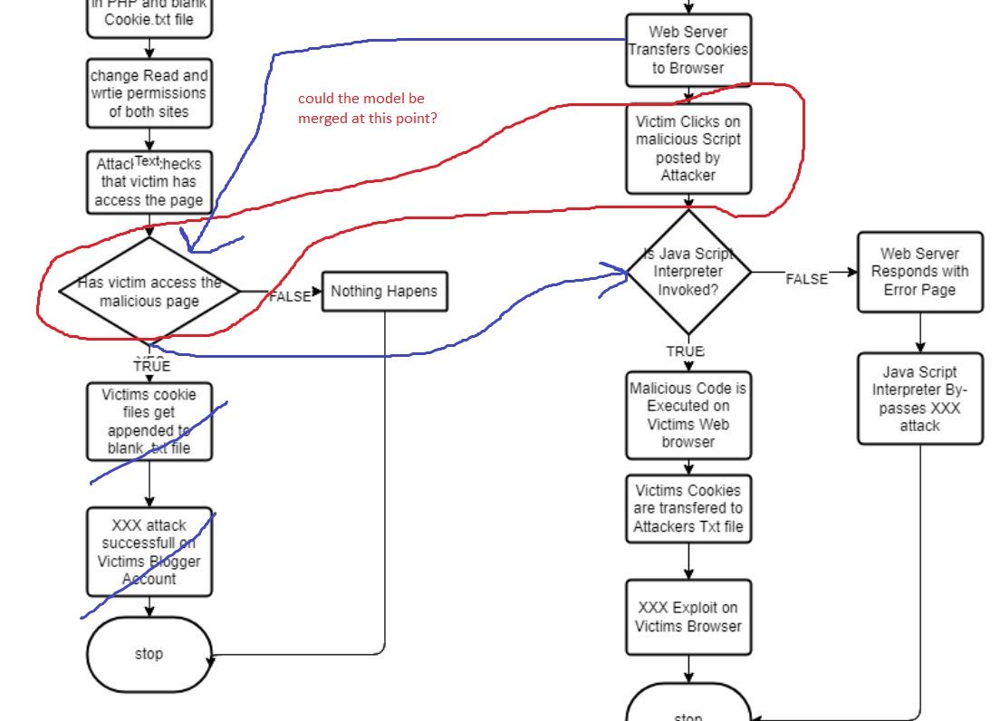

Collaborative Discussion 1: UML flowchart
Initial Post
- OWASP Top Ten 2017 Category A7 - Cross-Site Scripting (XSS)
Post by Jurbe Jubet The coding weakness identified in the OWASP Top Ten 2017 is the Category A7 - Cross-Site Scripting (XSS) from cwe.mitre.org, 2017. The sub category CWE-79: Improper Neutralization of Input During Web Page Generation ('Cross-site Scripting') has been used to illustrate this weakness.
The coding weakness identified in the OWASP Top Ten 2017 is the Category A7 - Cross-Site Scripting (XSS) from cwe.mitre.org, 2017. The sub category CWE-79: Improper Neutralization of Input During Web Page Generation ('Cross-site Scripting') has been used to illustrate this weakness.
Cross-site Scripting attacks are carried out by an attacker who has the privilege of injecting malicious code into a web application, typically via a web request and due to poor input validation in the Web application (cwe.mitre.org, 2017). The web application will not stop the execution of this malicious code since it is an executable script such as JavaScript that can dynamically add content to a rendered page (www.acunetix.com, 2017). The attacker is then able to steal the victims session and cookies as well as hijack the system since he now has an elevated privilege.
A Unified Modelling Language UML, is an Open source tool that can be used to illustrate how this attack takes place. I prefer The Visual Paradigm tool because it is easy to use and has become popular because of its numerous other application like info-graphics, Business Cards, Brochures, Book covers, Gift Cards (GeeksforGeeks.com, 2021). This additional feature brings in a full package of tools as a one stop shop for Visualization and designs.
In the Illustration below using the Visual Paradigm, there are two flowcharts illustrating the Attackers flow of Events as well as the Victims Exploit.
The attacker identifies the Vulnerability on the web browser , joins the blog and succeeds in posting Malicious JavaScript code. the attacker then creates a blank .txt file which appends the Victims Cookies. the attacker simply utilize the cookie information to get into the victim’s blogger account (Gupta et al, 2012).
Tutor's Response
Post by Cathryn PeoplesThanks very much for posting this, Jurbe.
Please consider my thoughts as to how the model may be amended below:

Peer Response
Post by Anoushka PalDear Jurbe,
I agree that the Visual Paradigm has multiple options . However, I feel the Sequence Diagram is easier and has both left to right and top to bottom options. It also forces us crystallise our thoughts better and makes the presentation neater and easier to comprehend. What are your thoughts on that?
Peer Response
Post by Jonathan AshmoreAccording to cwe.mitre.org (2021), CWE-640 or commonly known as ‘weak password recovery mechanism for forgotten password’ is ranked in the top ten of security weaknesses. The software mechanism to recover or change users’ passwords without knowing their original password is deficient or weak. For example, sending the original password, using common security questions, no throttling on resets, or emailing new password to another email.
OWASP (2018) recommends a list of processes to mitigate or improve the implementation of digital identity such as providing better security questions.
- What is your partner’s name? (weak).
- What was the name of the university you failed to attend? (good).
The Weak password recovery mechanism sends a new password in plaintext to the email account; there is no encryption, hashing, or MFA. An attacker using MITM approach could easily read, and modify the message, or use the password to gain access to the online account. a sequence diagram would be best as it highlights the interaction of user and attacker and the system in a sequential order (GeeksforGeeks, 2017).
REFERENCES
Cwe.mitre.org. (2021) CWE - CWE-640: Weak Password Recovery Mechanism for Forgotten Password (4.4). Available from: https://cwe.mitre.org/data/definitions/640.html [Accessed 11 Aug. 2022].
GeeksforGeeks (2017) Unified Modeling Language (UML) | An Introduction - GeeksforGeeks. GeeksforGeeks. Available from: https://www.geeksforgeeks.org/unified-modeling-language-uml-introduction/ [Accessed 11 Aug. 2022].
Hunt, T. (2012) Everything you ever wanted to know about building a secure password reset feature. Troy Hunt. Available from: https://www.troyhunt.com/everything-you-ever-wanted-to-know/ [Accessed 11 Aug. 2022].
Owasp.org. (2018) C6: Implement Digital Identity | OWASP. Available from: https://owasp.org/www-project-proactive-controls/v3/en/c6-digital-identity [Accessed 11 Aug. 2022].
Peer Response to Jonathan
Post by Jurbe JubetThanks Jonny, this was quite insightful. It is not surprising that one would concentrate on implementing strong password policies while totally being oblivious of the aspect of weak password recovery for forgotten passwords. According to HYPR, 78% of online users will reset a Password they forgot in past 90 Days (Leuthvilay, 2019). This tells the severity of this vulnerability and no wonder; it is among the OWASP top 10.
It is also quite striking, looking at the UML diagram, and realising that the Attacker may also seek to compromise the email login details of the victim and deliberately request for password change. The victim suffers attack since the new password sent will be delivered to the compromised email.
While I agree that the Sequence diagram is best to describe the interaction between user, attacker and the system in a sequential order, I believe it is not out of place to design other UML diagrams like Use cases and Activity diagrams alongside Sequence diagrams to have a more predictable model of a software.
REFERENCES
Leuthvilay, L. (2019). New Password Study by HYPR Finds 78% of People Had to Reset a Password They Forgot in Past 90 Days. [online] blog.hypr.com. Available at: https://blog.hypr.com/hypr-password-study-findings.